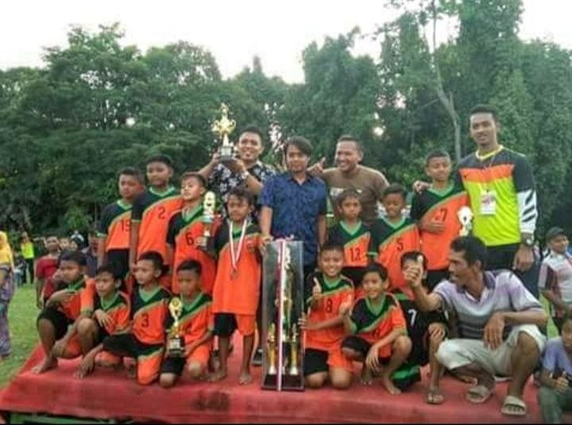

Sepak Bola [Football]
Satu prestasi kecil yang pernah aku capai di dunia sepak bola — sederhana, tapi berharga banget buatku.
Dari kelas 3 sd aku mulai ikut turnament yang ada didesaku, dan akhir nya Pada tahun 2017, aku bersama tim berhasil meraih juara dalam sebuah turnamen sepak bola lokal. Waktu itu aku bermain sebagai pemain belakang dan mengenakan nomor punggung 5. Walaupun hanya satu pencapaian kecil, momen itu jadi kenangan berharga yang selalu aku ingat — hasil dari kerja keras, latihan, dan semangat bareng teman satu tim.